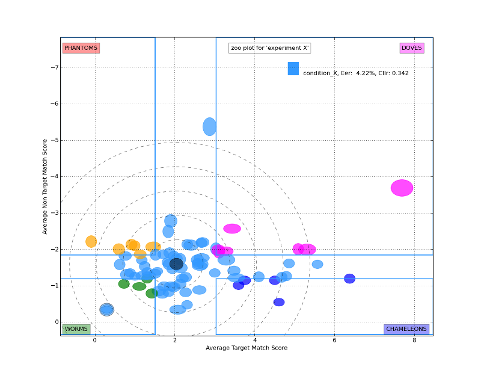
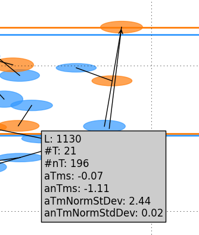
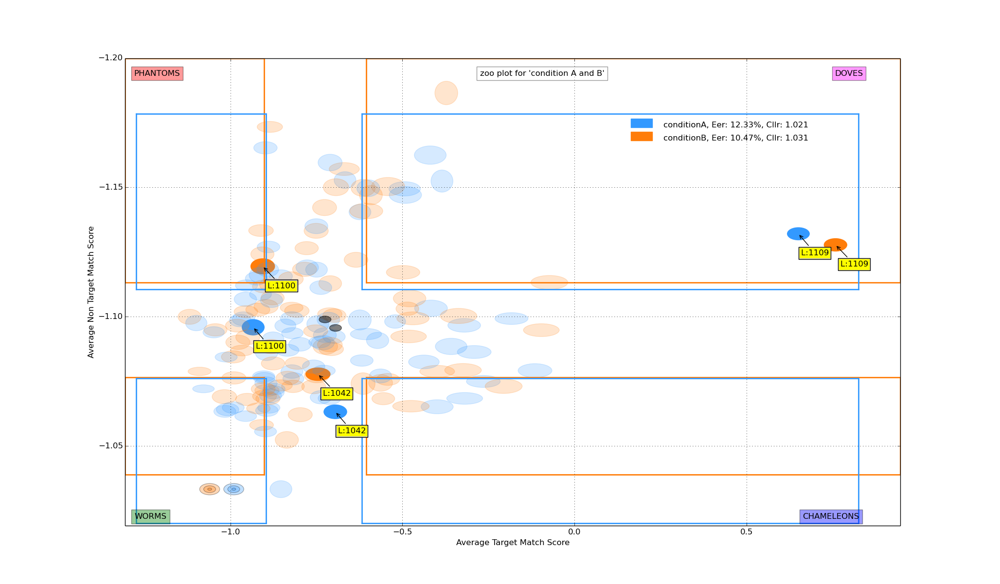
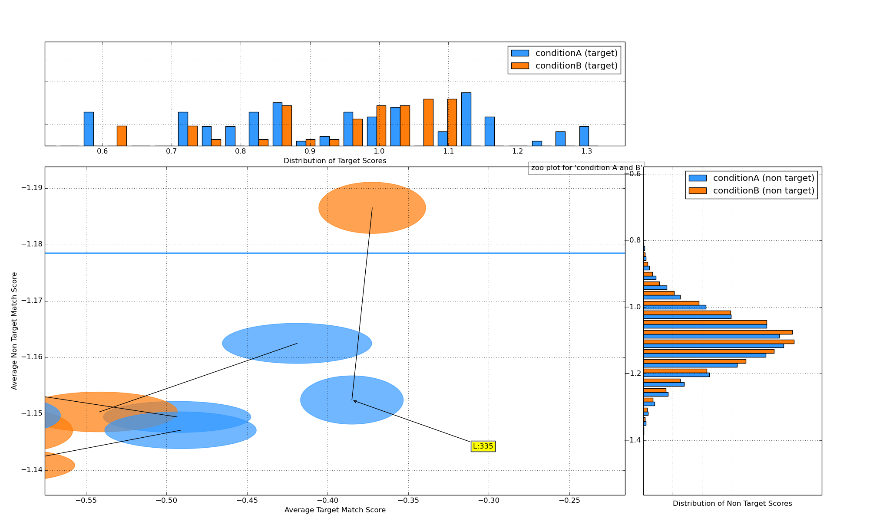

Zoo plot¶
Traditional plot¶
A zoo plot shows a scatter type plot where on the vertical axis the mean of the non target scores and on the horizontal axis the mean target scores are drawn for each label. This leads to a plot of dots where each dot represents the scores for one subject. The plot below shows an example with one dataset. The zoo’s special animals (points within quartile ranges) are coloured differently to make them stand out more. Note: there must be at least one target and one non target score to be able to include a subject’s data in the zoo plot.
Run this command:
python ./bioplot.py -e "condition A" -i input/testdata_A.txt -Z

You can combine multiple data sets in one plot. The next plot below shows combined data of 3 experiments (A, B and C). The legend shows the eer and cllr values for the respective conditions. Note that each data set has its own quartile ranges.
Run this command:
python ./bioplot.py -e "condition A, B and C" -i input/testdata_ABC.txt -Z

You can choose which error measures to show in the plot by setting any of the options below to true:
[zoo]
showCllrValue = True
showEERValue = True
showMinCllrValues = True
Tall thin animals¶
An extention of the zoo plots was shown at the IAFPA 2014 conference in Zurich, Switserland by Anil Alexander et al. They proposed that adding a measure of the standard deviations of the scores used to make the plot will add details of the score distributions of the subjects to the plot. If the option alexanderStyle in [zoo] is set to True, ellipses are drawn at the positions where the points of a traditional zoo plot would be. The width and height of the ellipses shown are essentially the standard deviations of the average target and average non target scores for a given label. Because these may be much bigger or much smaller than the horizontal and vertical scales of the traditional zoo plot, the mean standard deviations are scaled by subtracting the overall mean standard deviation and dividing by the standard deviation of all standard deviations. So they will be centered around zero. This is in essence a normalization procedure. The result will be ellipses with a unit width and height and ellipses smaller and bigger than that. To be able to actually plot the normalised ellipses, the width is multiplied by the range of scores on the horizontal axis and the height is multiplied by the range of the scores on the vertical axis. Finally to scale the ellipses their width and height is divided by a scale factor. This scale factor is related to the number of pixels in the display used to plot the zoo plot. A value of 150 works nicely for a 1600 ... 1280x1024 display. To get this type of plot set the following options in your settings file:
[zoo]
alexanderStyle = True
scaleFactor = 150
Set the screen resolution in layout:
[layout]
screenResolution = 1600x1024
Note that in the data set there may be subjects with limited scores available. In case there is only one target score, (or one non target score) one can not plot an ellipse for the corresponding axis. In this case bioplot provides the option to either set the normalized std dev for this subject to the minimum value which will result in a flat line for that dimension of the ellipse or assume this subject is similar to other subjects and set the normalized std dev for this subject to the unit value derived from the other subject target and non target scores. The default is to use the minimum value allowed.
showSingleValueAsUnitValue = False
See also minStdDev in section [zoo] in bioplot.cfg.
Yager and Dunstone¶
Yager and Dunstone show the worms and chameleons at the bottom of the plot and the phantoms and doves above them. This makes the vertical axis show lower scores at the top than at the bottom. If you do not like this layout set yagerstyle to False in the config file (the default is True) and the vertical axis will be reversed.
[zoo]
yagerstyle = True
Helper circles¶
Initially in a zoo plot helper ellipses are shown around the unit ellipse. If you resize the plot so that they become circles, it will be easier to interpret the plotted data points and the shapes of the data points will become independent of the screen dimensions. If you save a plot when resized in the way suggested you will be able to compare zoo plots made from different data sets more easily. The helper ellipses will disappear as soon as you click in the plot. Note, only if the std deviations of the average target scores are similar to standard deviations of the average non target scores this will help. If this is not the case, then the ranges of the vertical and horizontal axes differ too much to be able to resize the plot to a square.
Colours¶
If you don’t like the colours used, specify your own list in the section [metacolours] of the settings file. Different colours make it possible to combine multiple data sets in one plot. Note: don’t use white or some very light colour as the plot’s canvas is white and you would not see much of a label then. From a perceptual point you should avoide pure Blue in combination with other colours as the human eye does not focus blue light in the same way as the other colours because of chromatic aberation when viewing multiple colours at the same time. The meta data values are sorted alphabetically. The colours are used in the sequence they are listed here. Note that the labels are of no consequence! They are there for your convenience. Values should be in R,G,B format specifying integer values or hexadecimal values (6 digits). Search for colour values on the web using ‘html colours’ as the search string and you will find various lists and examples.
[metacolours]
IWouldCallThisBlueIsh = 3399FF
Orangy = 255,125,10
rustLike = 96,17,0
someSortOfPink = 255,54,160
OneOf50ShadesOfGrey = 10,5,8
someWhatBlue = 1414FF
definatelyGreen = 0,255,0
definatelyRed = 255,0,0
Note that the shape of the ellipses is influenced by the difference in range of the vertical and horizontal axis. This means that comparing shapes between zoo plots with varying ranges of mean target and mean non target scores can be very tricky. The lines between the ellipses connect ellipses for the same label.
Labels¶
In some of the plots above you have seen examples of labels shown when you click on the plot. The information shown can be configured via the config file. You can choose among these:
[zoo]
showNrTargetsAndNonTargets = True
showMeanScores = True
showStdDev = True
From top to bottom they will show the number of target scores (#T) and number of non target (#nT) scores for the subject; the average target match score (aTms) and the average non target match score (anTms); and lastly the average target match score normalized standard deviation (aTmNormStDev) and the average non target match score normalized standard deviation (anTmNormStDev).
The Labels by default show black text on a yellow background. The yellow background may be too large for the text on Ms Windows platforms when using matplotlib 1.4.3 however. If so, set runningWindows to True in [cfg], this will change the yellow background into a grey one and make the background fit the text in size.
Labels in zoo plots on OSX (Yosemite) will appear in yellow text on a yellow background due to a bug in matplotlib (or me using it wrong). Set runningOSX to True in [cfg], this will change the text into black and the background into grey.
Highlighting labels¶
If you click on a data point in the plot, a text label will be shown near the point. This makes it possible to find the name of a data point in e.g. the quartile ranges. If you are curious where a specific label is in the zoo plot, you need not click on a lot of them to find it. You can specify the labels on the command line. If they are in the plot, they will be highlighted. Example:
python ./bioplot.py -e "condition A and B" -i input/testdata_AB.txt -Z 1100 1109 1042
This will highlight label 1100, 1109 and 1042 in the zoo plot compiled from the data in ‘testdata_AB.txt’ and dim the colours of the other points in the plot making it easy to create a picture for a publication or report. Text labels will be displayed near the points selected.
Lines can be drawn between the ellipses to connect labels which are equal. This makes it easy to see what the effect of the parameter change is. Choose this setting:
[zoo]
interconnectMetaValues = True

Zooplots combined with Histograms¶
In the plot shown below the zoo plot is bordered by histograms showing the distributions of the target and non target scores. To get bioplot to show this, set the following option in bioplot.cfg:
[zoo]
boutenStyle = True
Note that the minimum and maximum values in the histograms are based on raw scores and the axes of the zoo plot are based on mean scores. This causes the axes to differ and therefore the peak of the histogram is not alligned with the center of the zoo plot. In this example this is clearly visible for the non target scores. In this zoo plot 2 data sets are shown combined. Each data set has its own quartile ranges.

To get a sort of quantification of the idea of change in position in the plot a circular histogram can be added in the top right corner. The black ellipses show the mean values of all target and non target mean scores. The circular histogram shows the distribution of angles of slopes the ellipses for a given subject moved on from one experiment’s results to the other. Bear in mind that due to the difference in the scale of the horizontal and vertical axes the angles can not be read from the zoo plot easily. A system’s discrimination appears to be proportional to the distance to the upper right corner of the plot (where the Doves are) and its calibration appears to be proportional to the distance of a data point to the imaginary diagonal one can draw from the lower left to the upper right of the plot. The delta value shown below the circular histogram tries to capture this by averaging all movements towards the upper right of the plot. The movement is measured by multiplying the absolute movement of an ellipses by the sine of the angle of movement to the horizontal axis. Note that this measure is computed between conditions sorted in alphabetical order. E.g. in the conditionA and conditionB data plot, the delta is computed for movement of ellipses from conditionA to conditionB.

The interface used to display the plots allows the user to zoom in on any part of the plots shown.
